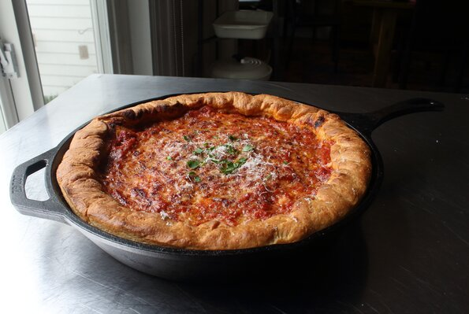

Chicago Deep-Dish Pizza Muffins

A tasty and good pizza recipe
Home cooks will find deep-dish pizza, with its unique buttery cornmeal crust, more forgiving than its New York counterpart. No need to worry about having the hottest oven or too many toppings - just make sure your sauce is very thick and flavorful! I garnished mine with parsley and more Parmesan cheese.
Ingredients
For the Dough:
- 1 ⅓ cups warm water
- 2 ¼ teaspoons active dry yeast
- ¼ cup olive oil
- ¼ cup melted butter
- 2 teaspoons white sugar
- 1 ½ teaspoons fine salt
- ½ cup cornmeal
- 3 ¾ cups all-purpose flour
- 2 teaspoons olive oil, or as needed, divided
- 4 cups pizza sauce, or to taste
For the Fillings/Toppings (in Order of Application):
- 4 ounces sliced provolone cheese
- 8 ounces fresh mozzarella cheese, cubed
- 1 pound spicy Italian sausage, casings removed
- 4 ounces shredded part-skim, low-moisture mozzarella cheese
- 2 ounces Parmigiano-Reggiano cheese
- 1 tablespoon olive oil
Steps
- Pour water into the bowl of a stand mixer fitted with a paddle attachment. Sprinkle in yeast and let dissolve, about 10 minutes. Add olive oil, melted butter, sugar, salt, cornmeal, and most of the flour. Knead, stopping to scrape down the sides occasionally and adding more flour as needed, until smooth and elastic.
- Transfer dough to a lightly floured work surface. Knead in extra flour if needed. Roll into a ball and place in a bowl greased with 1/2 teaspoon olive oil. Cover with a plate and let rise in a warm spot until doubled in volume, 1 to 2 hours.
- Meanwhile, let pizza sauce simmer in a pot over low heat until very thick, 60 to 90 minutes.
- Preheat the oven to 425 degrees F (220 degrees C).
- Poke dough to deflate and turn out onto your work surface. Press and stretch out dough into a round shape 3 to 4 inches larger than a 12-inch cast iron skillet. Brush skillet with 1 1/2 teaspoons olive oil. Place dough in the skillet; stretch and pull to evenly distribute it over the bottom and sides.
- Lay provolone cheese over the bottom of the crust. Scatter fresh mozzarella on top. Add Italian sausage and firm mozzarella. Ladle pizza sauce generously on top. Grate Parmesan cheese on top. Fold the edges of the crust in towards the center to seal in the sides. Drizzle crust and center with 1 tablespoon olive oil.
- Bake in the center of the preheated oven until crust sounds hollow and pizza is beautifully browned, about 35 minutes. Let rest for 10 minutes before slicing.